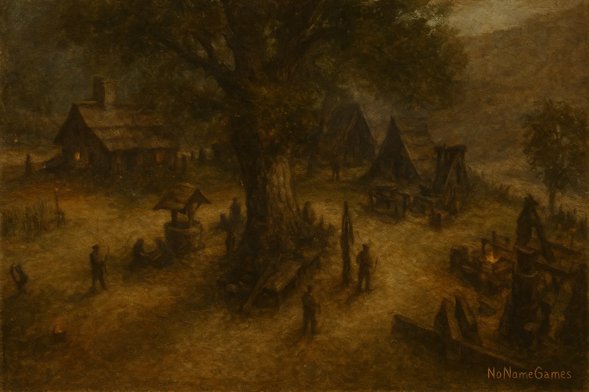
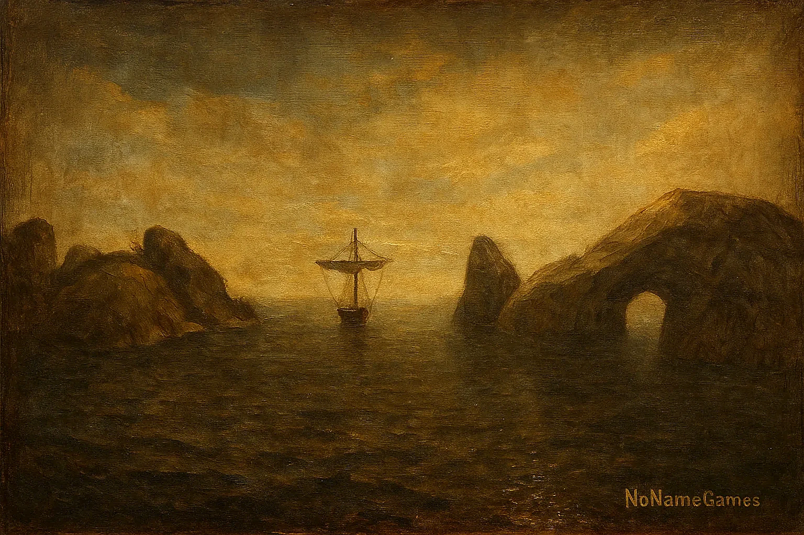
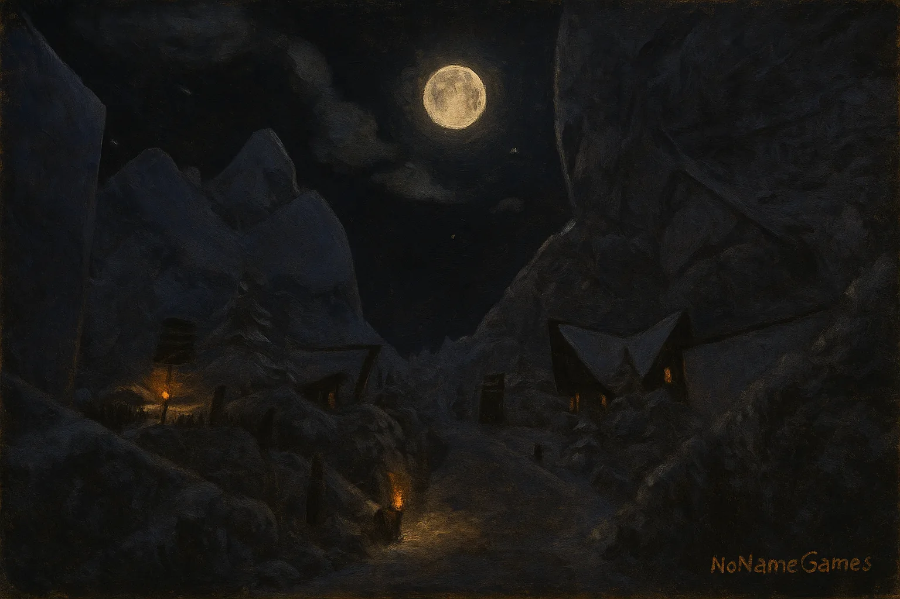

⇩
Installation
So installierst du HoK RP Schritt für Schritt erklärt.
Mehr erfahrenEin Hardcore-RP-Projekt in der Welt von Gothic 2
Gemeinsam schreiben wir Geschichte.

HoK RP ist ein ernsthaftes und atmosphärisches Rollenspielprojekt auf Basis von Gothic 2: Die Nacht des Raben. Im Mittelpunkt stehen glaubwürdige Charaktere, harte Konsequenzen und eine Spielwelt, die sich durch Entscheidungen der Community weiterentwickelt.
Nordmar, Khorinis und die Kolonie bilden den Rahmen für Geschichten, Fraktionen, Konflikte und gemeinsames Storytelling. Die Startseite führt neue Spieler direkt zu Installation, Regeln, RP-Leitfaden und den wichtigsten Systemen.
So installierst du HoK RP Schritt für Schritt erklärt.
Mehr erfahrenUnsere Serverregeln und Richtlinien für ein faires RP.
Zur RegellisteHilfen & Tipps für neue und erfahrene Rollenspieler.
Zum LeitfadenNützliche Infos, Befehle und Ingame-Hilfen.
Zu den Hilfen
Handel, Entdeckungen und ferne Küsten – die Welt ist größer, als du denkst.
Mehr erfahren